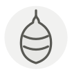

Jinhua ham
Jambon de Jinhua
| Latin name | Sus scrofa domesticus |
|---|---|
| Family | Meat & poultry |
| Origin | Jinhua, Zhejiang, China |
| Season (France) | All year |
| Flavour | Salty · Umami · Rich · Meaty |
| Typical price (France) | 40–80 €/kg |
What it is
The ham comes from the liangtouwu, both ends black, a small Zhejiang pig with a dark head and rump and a white middle, and it is trimmed to the shape of a bamboo leaf before eight to ten months of salting and drying. Unlike the raw hams of Europe it is not a cold cut at all: it is a seasoning, cut into stocks and steamed dishes for salt and depth.
In the kitchen
Scrub the surface and blanch a slab briefly before use — the hard cured rind turns a stock muddy. Thirty grams will season a litre of stock; add no salt until you have tasted the finished pot.
Goes with
Chicken Bamboo shoot Shaoxing wine Dried shiitake (donko) Winter melon Silken tofu (kinugoshi) Ginger
Same species
Andouillette Boudin blanc Natural casings Caul fat Chorizo Ciauscolo
Also used with
Termite mushroom (jizong) Conpoy
Something wrong here, or missing? Tell us